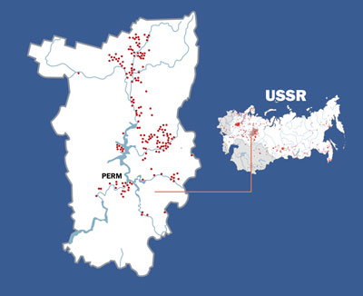
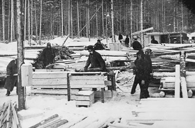
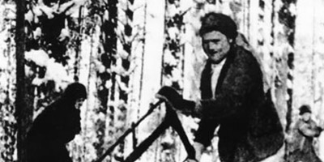
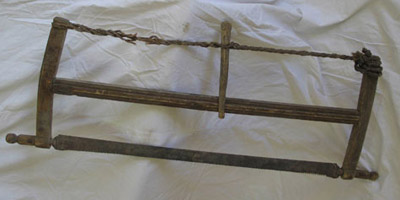
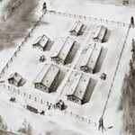
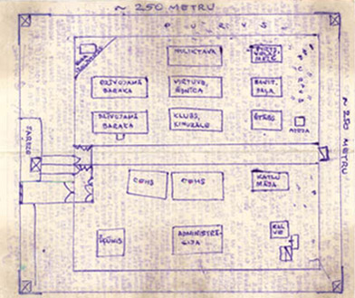

Online Exhibit → Stalin’s Gulag
Perm-36 Gulag Camp
The Soviets established Perm 36, called ITK-6 camp, in 1946 as a logging camp in the forested region of the Ural Mountains near the Siberian border. Here, prisoners cut down trees throughout the year and sent the lumber down river during the spring thaw to help rebuild Soviet cities damaged in the war. This camp was typical of thousands throughout the country.


Perm Region Camps, 1948-1953
About 150,000 inmates were imprisoned in more than 150 camps in the Perm region during the late 1940s. This made up about one-third of the total working population of the region.
Courtesy of the Gulag Museum at Perm-36.

Siberian Hinterland
To the east of the Perm region lies the vast Siberian hinterland.
Courtesy of the Gulag Museum at Perm-36.



Saw
A typical frame-saw used by the timber camp prisoners.
Courtesy of the Gulag Museum at Perm-36.

ITK-6 Camp (Perm-36)
ITK-6 Camp (Perm-36) in 1946. The camp had four barracks for 250 prisoners each, a punishment block (for prisoners who disobeyed the harsh camp rules), a hospital, outhouses, and a headquarters building. Drawing by Oleg Petrov.
Courtesy of the Gulag Museum at Perm-36.

Prison Plan of Perm-36
Plan of Perm-36 made by Lett Gunar Astra (in Latvian).
Courtesy of the Gulag Museum at Perm-36.Online Exhibit | Reflections | Traveling Exhibit | Teacher Resources | About
© 2006–2021, Center for History and New Media, George Mason University.
Typical Day at the Camp